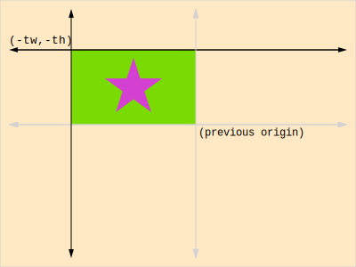

WebGL 행렬 스택 구현
이 글은 WebGL 2D DrawImage에서 이어집니다. 아직 읽지 않았다면 거기부터 시작하는 게 좋습니다.
지난 글에서 우리는 source rectangle과 destination rectangle을 모두 지정하는 기능을 포함하여 Canvas 2D의 drawImage 함수와 동일한 WebGL을 구현했습니다.
아직 하지 않은 것은 임의의 지점에서 회전 및 크기 조정하는 겁니다.
더 많은 매개변수를 추가하여 이를 수행할 수 있으며, 최소한 중심점과 rotation 그리고 x와 y의 scale을 지정해야 합니다.
다행히 더 일반적이고 유용한 방법이 있습니다.
Canvas 2D API가 이를 수행하는 방법은 행렬 스택을 사용하는 겁니다.
Canvas 2D API의 행렬 스택 함수는 save, restore, translate, rotate, scale이 있습니다.
행렬 스택은 구현하기 매우 간단합니다. 우선 행렬의 스택을 만듭니다. 그리고 이전에 만들었던 함수들을 이용하여 translation, rotation, scale 행렬로 스택의 최상단 행렬을 곱하는 함수를 만들면 되는데요.
다음은 구현입니다.
먼저 생성자와 save 그리고 restore 함수입니다.
function MatrixStack() {
this.stack = [];
// 스택이 비어있기 때문에 초기 행렬을 넣습니다.
this.restore();
}
// 이전에 저장된 행렬을 복원하여 스택의 최상단을 꺼냅니다.
MatrixStack.prototype.restore = function() {
this.stack.pop();
// 스택을 완전히 비우지 마세요.
if (this.stack.length < 1) {
this.stack[0] = m4.identity();
}
};
// Current matrix의 복사본을 스택에 복사
MatrixStack.prototype.save = function() {
this.stack.push(this.getCurrentMatrix());
};
또한 최상단 행렬을 가져오고 설정하기 위한 함수가 필요합니다.
// Current matrix(스택의 최상단)의 복사본 가져오기
MatrixStack.prototype.getCurrentMatrix = function() {
return this.stack[this.stack.length - 1].slice();
};
// Current matrix 설정
MatrixStack.prototype.setCurrentMatrix = function(m) {
return this.stack[this.stack.length - 1] = m;
};
마지막으로 이전의 행렬 함수를 이용하여translate, rotate, scale을 구현해야 합니다.
// Current matrix 이동
MatrixStack.prototype.translate = function(x, y, z) {
var m = this.getCurrentMatrix();
this.setCurrentMatrix(m4.translate(m, x, y, z));
};
// Z를 중심으로 current matrix 회전
MatrixStack.prototype.rotateZ = function(angleInRadians) {
var m = this.getCurrentMatrix();
this.setCurrentMatrix(m4.zRotate(m, angleInRadians));
};
// Current matrix 크기 조정
MatrixStack.prototype.scale = function(x, y, z) {
var m = this.getCurrentMatrix();
this.setCurrentMatrix(m4.scale(m, x, y, z));
};
3D 행렬 수학 함수를 사용하고 있는데요.
Translation의 z에 0을 사용하고 scale의 z에 1을 사용할 수 있지만, Canvas 2D의 2D 함수 사용에 너무 익숙해서 종종 z에 대한 지정을 까먹어서 코드가 끊기므로 z를 선택적으로 만들어봅시다.
// Current matrix 이동
MatrixStack.prototype.translate = function(x, y, z) {
+ if (z === undefined) {
+ z = 0;
+ }
var m = this.getCurrentMatrix();
this.setCurrentMatrix(m4.translate(m, x, y, z));
};
...
// Current matrix 크기 조정
MatrixStack.prototype.scale = function(x, y, z) {
+ if (z === undefined) {
+ z = 1;
+ }
var m = this.getCurrentMatrix();
this.setCurrentMatrix(m4.scale(m, x, y, z));
};
이전 강의인 drawImage에 이런 코드들이 있었습니다.
// 이 행렬은 pixel에서 clip space로 변환합니다.
var matrix = m4.orthographic(0, gl.canvas.width, gl.canvas.height, 0, -1, 1);
// 이 행렬은 쿼드를 dstX,dstY로 이동시킵니다.
matrix = m4.translate(matrix, dstX, dstY, 0);
// 이 행렬은 1단위 쿼드를 1단위에서 dstWidth,dstHeight 단위로 크기 조정합니다.
matrix = m4.scale(matrix, dstWidth, dstHeight, 1);
우리는 행렬 스택을 생성하기만 하면 됩니다.
var matrixStack = new MatrixStack();
그리고 스택의 최상단 행렬에 곱합니다.
// 이 행렬은 pixel에서 clip space로 변환합니다.
var matrix = m4.orthographic(0, gl.canvas.width, gl.canvas.height, 0, -1, 1);
+// 이 행렬은 원점을 current matrix stack에 해당하는 곳으로 이동시킵니다.
+matrix = m4.multiply(matrix, matrixStack.getCurrentMatrix());
// 이 행렬은 쿼드를 dstX,dstY로 이동시킵니다.
matrix = m4.translate(matrix, dstX, dstY, 0);
// 이 행렬은 1단위 쿼드를 1단위에서 dstWidth,dstHeight 단위로 크기 조정합니다.
matrix = m4.scale(matrix, dstWidth, dstHeight, 1);
그리고 이제 Canvas 2D API를 사용하는 것과 동일한 방법으로 사용할 수 있습니다.
행렬 스택을 사용하는 방법에 대해 모르는 경우 원점을 이동하고 방향을 지정하는 것이라 생각하시면 됩니다. 예를 들어 기본적으로 2D Canvas에서 원점(0,0)은 왼쪽 상단 모서리입니다.
만약 원점을 캔버스의 중앙으로 옮긴다면 0,0에 이미지를 그릴 때 캔버스의 중앙부터 그려집니다.
이전 예제를 가져와서 이미지 하나만 그려봅시다.
var textureInfo = loadImageAndCreateTextureInfo('resources/star.jpg');
function draw(time) {
gl.clear(gl.COLOR_BUFFER_BIT);
matrixStack.save();
matrixStack.translate(gl.canvas.width / 2, gl.canvas.height / 2);
matrixStack.rotateZ(time);
drawImage(
textureInfo.texture,
textureInfo.width,
textureInfo.height,
0, 0
);
matrixStack.restore();
}
그리고 여기 결과입니다.
drawImage에 0, 0을 전달해도 matrixStack.translate를 사용하여 원점을 캔버스의 중앙으로 옮겼기 때문에 이미지가 그려지고 해당 중심을 기준으로 회전하는 것을 볼 수 있습니다.
회전 중심을 이미지의 중앙으로 옮겨봅시다.
matrixStack.translate(gl.canvas.width / 2, gl.canvas.height / 2);
matrixStack.rotateZ(time);
+matrixStack.translate(textureInfo.width / -2, textureInfo.height / -2);
이제 캔버스 중앙에 있는 이미지의 중심을 기준으로 회전합니다.
각 모서리에서 회전하는 동일한 이미지를 그려봅시다.
matrixStack.translate(gl.canvas.width / 2, gl.canvas.height / 2);
matrixStack.rotateZ(time);
+matrixStack.save();
+{
+ matrixStack.translate(textureInfo.width / -2, textureInfo.height / -2);
+
+ drawImage(
+ textureInfo.texture,
+ textureInfo.width,
+ textureInfo.height,
+ 0, 0
+ );
+
+}
+matrixStack.restore();
+
+matrixStack.save();
+{
+ // 중앙 이미지의 중심에 있으므로 왼쪽 상단 모서리로 이동합니다.
+ matrixStack.translate(textureInfo.width / -2, textureInfo.height / -2);
+ matrixStack.rotateZ(Math.sin(time * 2.2));
+ matrixStack.scale(0.2, 0.2);
+ // 이제 그리려는 이미지의 오른쪽 하단 모서리가 필요합니다.
+ matrixStack.translate(-textureInfo.width, -textureInfo.height);
+
+ drawImage(
+ textureInfo.texture,
+ textureInfo.width,
+ textureInfo.height,
+ 0, 0
+ );
+
+}
+matrixStack.restore();
+
+matrixStack.save();
+{
+ // 중앙 이미지의 중심에 있으므로 오른쪽 상단 모서리로 이동합니다.
+ matrixStack.translate(textureInfo.width / 2, textureInfo.height / -2);
+ matrixStack.rotateZ(Math.sin(time * 2.3));
+ matrixStack.scale(0.2, 0.2);
+ // 이제 그리려는 이미지의 오른쪽 하단 모서리가 필요합니다.
+ matrixStack.translate(0, -textureInfo.height);
+
+ drawImage(
+ textureInfo.texture,
+ textureInfo.width,
+ textureInfo.height,
+ 0, 0
+ );
+
+}
+matrixStack.restore();
+
+matrixStack.save();
+{
+ // 중앙 이미지의 중심에 있으므로 왼쪽 하단 모서리로 이동합니다.
+ matrixStack.translate(textureInfo.width / -2, textureInfo.height / 2);
+ matrixStack.rotateZ(Math.sin(time * 2.4));
+ matrixStack.scale(0.2, 0.2);
+ // 이제 그리려는 이미지의 오른쪽 상단 모서리가 필요합니다.
+ matrixStack.translate(-textureInfo.width, 0);
+
+ drawImage(
+ textureInfo.texture,
+ textureInfo.width,
+ textureInfo.height,
+ 0, 0
+ );
+
+}
+matrixStack.restore();
+
+matrixStack.save();
+{
+ // 중앙 이미지의 중심에 있으므로 오른쪽 하단 모서리로 이동합니다.
+ matrixStack.translate(textureInfo.width / 2, textureInfo.height / 2);
+ matrixStack.rotateZ(Math.sin(time * 2.5));
+ matrixStack.scale(0.2, 0.2);
+ // 이제 그리려는 이미지의 왼쪽 상단 모서리가 필요합니다.
+ matrixStack.translate(0, 0); // 0,0은 이 라인이 실제로는 아무것도 하지 않음을 의미
+
+ drawImage(
+ textureInfo.texture,
+ textureInfo.width,
+ textureInfo.height,
+ 0, 0
+ );
+
+}
+matrixStack.restore();
그리고 여기 결과입니다.
translate, rotateZ, scale 등의 다양한 행렬 스택 함수를 원점 이동으로 생각하면, 회전의 중심을 설정하는 방식으로, drawImage를 호출할 때 이미지의 특정 부분이 이전 원점에 있도록 하기 위해 원점을 어디로 이동해야 할까요?
400x300 캔버스에서 matrixStack.translate(220, 150)를 호출한다고 해봅시다.
여기서 원점은 220, 150이고 모든 그리기는 해당 지점에 상대적입니다.
drawImage를 0, 0으로 호출했을 때 이미지가 그려지는 곳이죠.

오른쪽 하단이 회전의 중심이 되길 원한다고 가정해봅시다.
이런 경우 drawImage를 호출할 때 회전의 중심이 되고 싶은 지점이 현재 원점이 되려면 어디로 원점을 옮겨야 할까요?
이제 drawImage를 0,0으로 호출하면 텍스처는 이전 원점이었던 오른쪽 하단 모서리에 그려집니다.

어느 시점이든 행렬 스택에 했던 작업은 중요하지 않습니다.
원점을 움직이거나 크기 조정하거나 회전하기 위한 여러 작업을 수행했지만 drawImage를 호출하기 전이라면 원점이 어디든 상관없는데요.
새로운 원점이므로 스택에 텍스처가 없다면 텍스처가 그려질 위치를 기준으로 원점이 이동할 곳을 결정하면 됩니다.
행렬 스택이 이전에 다뤘던 장면 그래프와 굉장히 비슷하다는 것을 알아채셨을 겁니다. 장면 그래프는 node tree가 있으며 tree를 탐색하면서 각 node를 parent node로 곱했습니다. 행렬 스택은 사실상 동일한 프로세스의 또 다른 버전입니다.